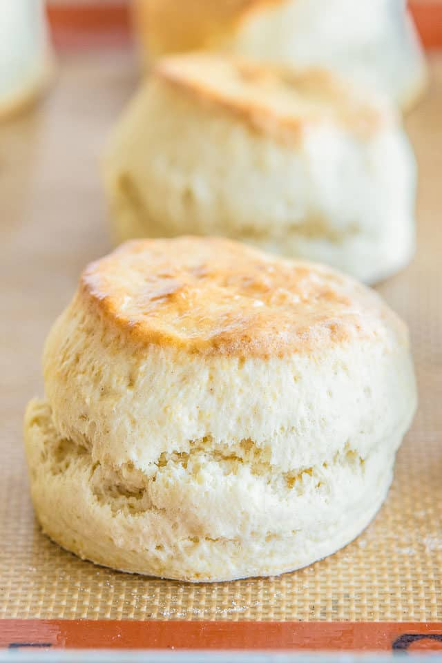

Main Page
English Scones

Tips before you begin
- Work quickly, and resist the urge to add excess flour
- Push the cutter straight down. When you go to cut your circles of scone dough, make sure to push the cutter straight down. Do not twist the cutter. This will ensure the scones rise as high as possible.
- Use the best quality butter. It’s incredible how different brands make wildly different tasting butters. Some don’t taste like much of anything, while others have incredibly rich flavor, that slightly sweet dairy fat flavor all humans love.
Ingredients
- 2 cups all-purpose flour (10 ounces by weight)
- 4 tsp baking powder
- 1/2 tsp salt
- 1/4 cup sugar
- 6 tbsp unsalted butter at room temperature
- 2/3 cup whole milk
- 1 large egg
instructions
- Preheat the oven to 425 degrees F.
- In a food processor, pulse the flour, baking powder, salt, and sugar a couple times to combine.
- Add the butter and pulse 7-10 times until the butter is completely distributed. You shouldn’t see any chunks of butter, and the mixture should have a sandy texture to it. Transfer to a large mixing bowl.
- In a small bowl, whisk to combine the milk and egg. Save 2 tbsp of it for the egg wash later, and pour the rest into the mixing bowl with the dry ingredients.
- Stir to combine with a spatula, until a rough dough forms.
- Transfer to a lightly floured countertop and knead about 10 times until the dough comes together into a relatively smooth ball. Take care not to knead too much, or the dough will be tougher and not rise as high.
- Roll the dough about an inch thick and use a 2.5″ cutter to cut about 7 circles. Re-roll the scraps and cut out another 2.
- Place the scones onto a parchment or silicone mat lined baking sheet and brush the tops with the reserved egg wash.
- Bake the scones for 13-15 minutes, until about tripled in height, and golden brown on the tops and bottoms. Enjoy!
Main Page